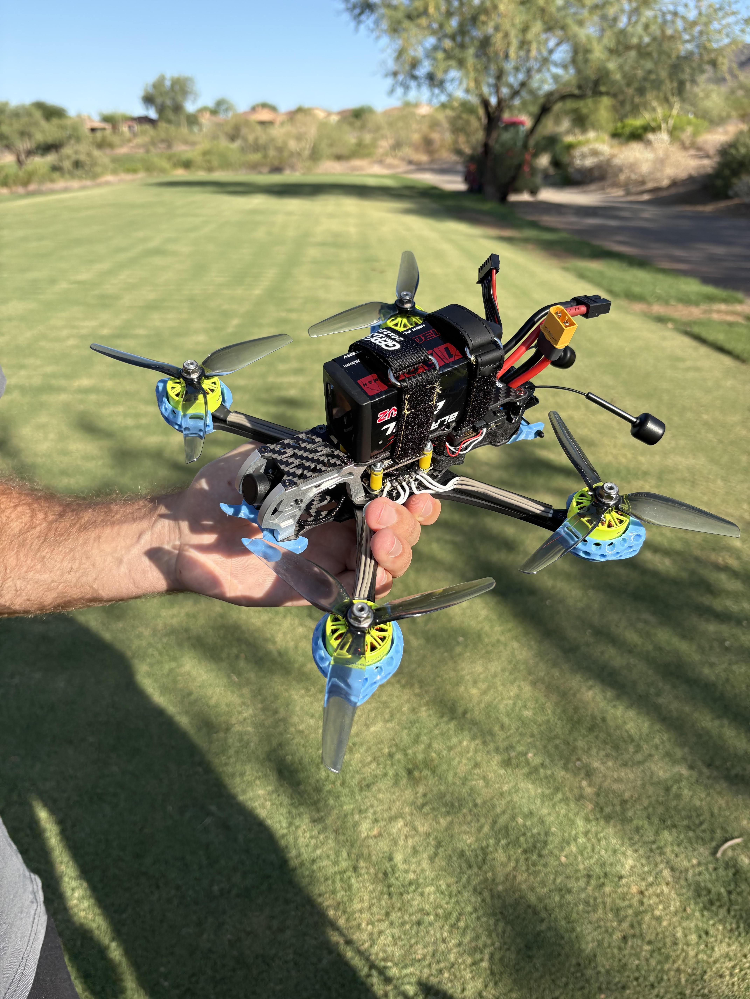

About Me
Hi, I'm Ryan, a second year Electrical Engineering student at the Colorado School of Mines. I design PCBs for the Mines Formula SAE team, working across both the EV and IC race car programs on everything from safety-critical high-voltage hardware to embedded digital systems.
I like taking problems, such as a rule in the FSAE handbook or a piece of outdated hardware, and turning it into a working board. A few of these are below.
I am currently looking for a co-op or internship in hardware or PCB design, so please reach out!
My Projects

HV Indicator Board
Non-opto flyback converter with UVLO, built to meet FSAE's EV.5.7 high-voltage indicator rule.

Ground Station V6
ESP32-S3 ground station relaying timing-gate data to a Raspberry Pi 5, with HDMI output and cloud logging.

Current Voltage Sensor
Hall-effect current sensing and op-amp buffered voltage sensing for the EMF1 EV car's safety-critical boards.

FPV Drone
A hand-built 5-inch freestyle quad — frame, stack, motors, and video system chosen and assembled individually.
Contact
Always happy to talk about hardware, PCB design, or FSAE. Please feel free to reach out!